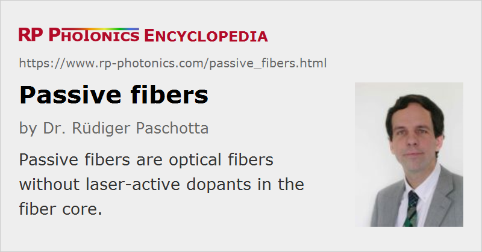

Passive Fibers
Definition: optical fibers without laser-active dopants in the fiber core
More general term: optical fibers
More specific terms: step-index fibers, graded-index fibers, polarization-maintaining fibers, silica fibers, fluoride fibers, mid-infrared fibers, single-crystal fibers, plastic optical fibers, dispersion-shifted fibers, dispersion-decreasing fibers, photonic crystal fibers, photonic bandgap fibers, hollow-core fibers, nanofibers, single-mode fibers, single-polarization fibers, few-mode fibers, multimode fibers, large-core fibers, large mode area fibers, tapered fibers, telecom fibers, specialty fibers
Opposite terms: active fibers
German: passive Fasern
Category: fiber optics and waveguides
How to cite the article; suggest additional literature
Author: Dr. Rüdiger Paschotta
Passive fibers are optical fibers without laser-active dopants in the fiber core. That usually implies that they can only passively transmit light, with some propagation losses are without amplification of the optical power. In some cases, however, nonlinear amplification mechanisms based on stimulated Raman scattering or the Kerr nonlinearity occur.
Passive fibers can be separated into many specific categories:
- by fiber materials: glass fibers, single-crystal fibers, polycrystalline fibers (→ mid-infrared fibers), silica fibers, fluoride fibers, plastic optical fibers
- by fiber designs and physical principles of light guiding: step-index fibers, graded-index fibers, photonic crystal fibers, photonic bandgap fibers, hollow-core fibers, large-core fibers, tapered fibers, nanofibers
- by their guiding properties: single-mode fibers, polarization-maintaining fibers, single-polarization fibers, few-mode fibers, multimode fibers, large mode area fibers, dispersion-shifted fibers, dispersion-decreasing fibers
- by the spectral region: near-infrared fibers, mid-infrared fibers, ultraviolet fibers
- by their application areas: delivery fibers, telecom fibers, imaging fibers (e.g. as fiber bundles), sensor fibers (→ fiber-optic sensors)
Compared with active fibers, passive fibers generally exhibit lower propagation losses and are available at lower cost.
Fibers may be equipped with fiber connectors and protective materials to form fiber cables.
Questions and Comments from Users
Here you can submit questions and comments. As far as they get accepted by the author, they will appear above this paragraph together with the author’s answer. The author will decide on acceptance based on certain criteria. Essentially, the issue must be of sufficiently broad interest.
Please do not enter personal data here; we would otherwise delete it soon. (See also our privacy declaration.) If you wish to receive personal feedback or consultancy from the author, please contact him e.g. via e-mail.
By submitting the information, you give your consent to the potential publication of your inputs on our website according to our rules. (If you later retract your consent, we will delete those inputs.) As your inputs are first reviewed by the author, they may be published with some delay.
Bibliography
| [1] | R. Paschotta, tutorial on "Passive Fiber Optics" |
See also: active fibers, fiber optics
and other articles in the category fiber optics and waveguides
|  |
If you like this page, please share the link with your friends and colleagues, e.g. via social media:
These sharing buttons are implemented in a privacy-friendly way!